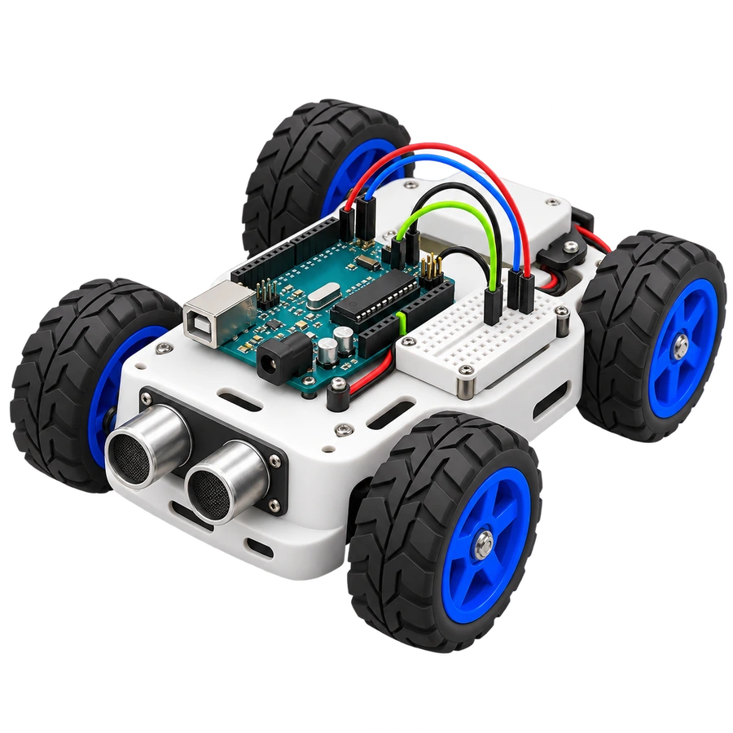

Antes controlado · sin ilustración

Rover 3D sobre la tarjeta existente. Se conservan las otras portadas, el carrusel, los enlaces y el simulador.



El antes controlado reproduce la tarjeta anterior ocultando el arte y restaurando el icono provisional durante la captura. Verificación · Detalle de la entrega local